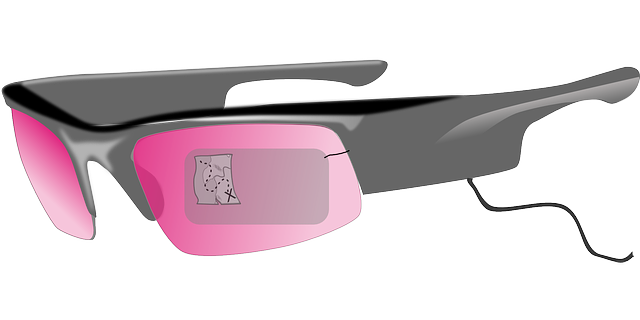
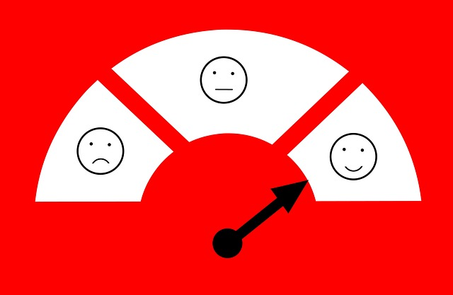

Innovación
Ámbitos de la innovación
 Implementación de programas
Implementación de programas
|
Formación académica | Nuevas técnicas de gestión |
| Financiamiento | Marco legal | Fomento a la investigación |
| Las aplicaciones de citas del IMSS e ISSSTE | Servicio de entrega de comida a domicilio | Firma Electrónica avanzada (FIEL) |

Innovación incremental

Innovación radical
Innovación administrativa
|
Creatividad Imagen Procesos de organización Investigación Formación personal Tecnología |
Tecnología básica
 |
||
| Google AMP | Instastories | 2FA |
¿Conviene adaptar cada cosa que sale al mercado?
| Que se quedan | Público especializado | Que no tienen un gran impacto |
|---|---|---|
|  |
FIN
Calidad


Información adecuada
Estratégico
Autoevaluación
Definición de objetivos


Errores
- Identificar
- Clasificar
- Relacionar
- Crear un mapa de progreso
- Indicar resultados
- Entrenar
- Educar
- Alinear

Medir
| Reportar | Evaluar | Comunicar |
|---|---|---|
 |